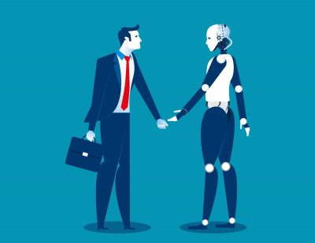
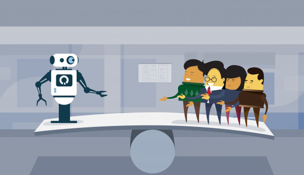

Ganz grundsätzlich sind unter Automatisierung alle Maßnahmen zu verstehen,
bei denen Steuerungs- und Regelungsaufgaben, die ursprünglich von Menschen erledigt wurden,
auf Maschinen übertragen werden. Während bei der Maschinisierung lediglich Produktionsschritte
von Maschinen übernommen und bei der Mechanisierung lediglich Energie durch Maschinen zugeführt
werden, übernehmen künstliche Systeme bei der Automatisierung sogar Steuerungs- und
Regelungsaufgaben. Solche Systeme müssen daher so programmiert sein, dass sie in der Lage sind,
Entscheidungen aufgrund festgelegter Parameter zu treffen und angemessene Handlungsreaktionen
daraus abzuleiten.
Arten der Automatisierung
Es gibt unterschiedliche Arten der Automatisierung. So bezeichnet man die Unterstützung
menschlicher Arbeit durch Automaten als Teilautomatisierung, wohingegen bei der
Vollautomatisierung Arbeitsprozesse komplett in den Verantwortungsbereich von Maschinen
übergeben werden.
Produktivität
Mit der Automatisierung verfolgen Unternehmen ganz unterschiedliche Ziele. Zum einen geht es
darum, wiederkehrende Aufgaben durch Maschinen erledigen zu lassen, damit die Arbeitsprozesse
besonders effizient ablaufen. Der Gedanke hierbei ist, eine möglichst große Produktivität zu
erreichen. Ebenfalls von Bedeutung ist die Flexibilisierung des Betriebs.
Sicherheit
Je professioneller die Automatisierung vorgenommen wurde, desto flexibler lässt sich ein
künstliches System auf solche Veränderungen anpassen. Nicht zuletzt geht es bei der
Automatisierung darum, die Arbeit für die Angestellten sicherer und gesünder zu machen. Wenn
KI anstrengende und gefährliche Aufgaben übernimmt, kommt es nicht so leicht zu Unfällen,
Haltungsschäden und anderen Übeln.
Kundenfreundlichkeit
Außerhalb der Fertigungsbetriebe spielt die Automatisierung in Sachen Kundenfreundlichkeit
eine große Rolle. Es ist einfach bequem, wenn sich die Supermarkttüren von selbst öffnen und
man weder selbst aktiv werden muss noch einen Portier braucht.

Automatisierung stärkt Unternehmen
Die Aufgabe besteht also darin, die Automatisierung für das eigene Unternehmen nutzbar zu
machen. Das bedeutet, die Produktivität des Betriebs zu optimieren und dafür zu sorgen, dass
es keine betriebsbedingten Kündigungen geben muss.
Die Stärken der Technologie
Gerade in Fertigungsbetrieben leisten Maschinen Dinge, die für einen Menschen nicht zu
erbringen sind. Zum Beispiel können sie Tag und Nacht ohne Unterbrechung arbeiten, ohne
Ruhezeiten oder gar Urlaub zu benötigen. Dies stellt einen zusätzlichen Sicherheitsfaktor für
die Unternehmen dar, da es nicht durch Übermüdung oder fehlende Konzentration zu
Produktionsfehlern oder Unfällen kommen kann. Außerdem lassen sich auf diese Weise große
Produktionsmengen in kurzer Zeit realisieren. Hierdurch ist es den Betrieben möglich, mehr
und größere Aufträge anzunehmen und zur Zufriedenheit der Kunden zu erledigen. Hinzu kommt,
dass Automaten ökonomisch günstiger als Angestellte sind.

Organisation des Unternehmens
Viele Arbeitsprozesse lassen sich durch Maschinen deutlich schneller und einfacher erledigen.
Das gilt zum Beispiel für die Suche nach bestimmten Dokumenten oder Daten. Während ein Mensch
für die Durchsicht aller Unterlagen und Ordner eines Betriebs eine immens lange Zeit bräuchte,
erledigt ein Algorithmus das in Bruchteilen von Sekunden. Nicht zuletzt sind Automaten
besonders effizient im Umgang mit den Kunden. Sie erfüllen die Kundenwünsche schnell und
exakt, sodass diese mit dem Betrieb zufrieden sind und eine Menge Zeit sparen.
Kreativität und Einfühlungsvermögen
Bei all diesen Vorteilen, die Maschinen und Automaten mit sich bringen, drängt sich schon die
Frage auf, inwieweit Menschen in der Arbeitswelt überhaupt noch gebraucht werden. Und
tatsächlich gibt es Studien wie die Untersuchung des Weltwirtschaftsforums in Davos, die
voraussagen, dass die digitale Revolution in den wichtigsten Industrie- und Schwellenländern
rund 5 Millionen Arbeitsplätze bis 2020 kosten wird. Allerdings wird diese Prognose von
vielen Experten angezweifelt.
Das liegt daran, dass der Faktor Mensch in vielen Berufen einfach unverzichtbar ist. Das gilt
vor allem für Dienstleistungsberufe, in denen Kreativität und Einfühlungsvermögen gefragt
sind. Maschinen sind dem Menschen immer dann überlegen, wenn immer gleiche und regelmäßig
wiederkehrende Aufgaben zu erledigen sind. Sobald aber eine schnelle Auffassungsgabe und die
Fähigkeit, sich an ungewohnte Gegebenheiten anpassen zu können, gefragt sind, geht nichts
über den Menschen – noch nicht
Die Angst vor der Automatisierung
Eine Umfrage des Deutschen Instituts für Vertrauen und Sicherheit im Internet (DIVSI), die
von Dimap durchgeführt wurde, hat ergeben, dass rund 60% alle Bundesbürger der
Automatisierung kritisch gegenüberstehen (siehe weiter oben). Sie befürchten, dass durch
neue Technologien und Automaten ein Großteil der Arbeitsplätze verloren gehen könnte.
Zudem betonen 54%, dass die Digitalisierung in ihren Augen mehr Risiken als Nutzen mit
sich brächte. Dem stehen 42% der Befragten gegenüber, die der Automatisierung gegenüber
positiv eingestellt sind und vor allem deren Nutzen und Vorteile im Blick haben
Kunden wollen menschlichen Kontakt
Das höchste Gut für jedes Unternehmen ist die Kundenzufriedenheit. Nur wenn ein Kunde die
Produkte und Dienstleistungen eines Unternehmens annimmt und mag, kann der jeweilige
Betrieb erfolgreich sein. Aus diesem Grund hat sich die Automatisierung in vielen
Bereichen der Wirtschaft noch nicht durchgesetzt. So wäre es zum Beispiel schon heute
möglich, viele Kassierer im Supermarkt durch Maschinen zu ersetzen. Das wird von den
Kunden aber nicht gewollt. Ähnliches gilt für den Gesundheitsbereich.